Hayao Miyazaki (Japanese: 宮崎 駿 Hepburn: Miyazaki Hayao, born January 5 1941) is a Japanese film director, producer, screenwriter, animator, author, and manga artist. A co-founder of Studio Ghibli, a film and animation studio, he has attained international acclaim as a masterful storyteller and as a maker of anime feature films, and is widely regarded as one of the greatest animation directors.
Miyazaki's films usually have common themes among them, including the typical struggle between good and evil, environmentalism, and politics. The protagonists are usually strong, independent girls or young women and the villains are typically uncertain in nature with redeeming qualities.
He was announced to retire right after his last feature film, The Wind Rises, but will continue to work on short films.
Quote: "The creation of a single world comes from a huge number of fragments and chaos."
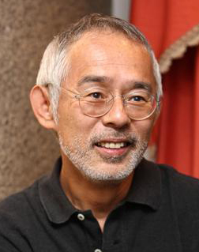
Co-Founder Toshio Suzuki
Toshio Suzuki (鈴木 敏夫Suzuki Toshio, born August 19 1948) is chief producer and co-founder of Studio Ghibli, he was president of Ghibli from 2005 to 2008. Suzuki is renowned as one of Japan's most successful producers after the enormous box office success (in Japan) of many Ghibli films. According to Hayao Miyazaki, "If it were not for Mr. Suzuki, there wouldn't have been Studio Ghibli."
Suzuki started out at Tokuma Shoten joining the company shortly after graduating. He worked on Asahi Geino magazen before becoming editor of Animage in 1978, where he met Hayao Miyazaki who had created the Nausicaä of the Valley of the Wind manga. He convinced Miyazaki into turning Nausicaä into a film, co-founding Studio Ghbli after the film. He served on production committees on My Neighbor Totoro and Grave of the Fireflies before officially joining the studio in 1991 as a producer.
He graduated from Keio University with a degree in literature.
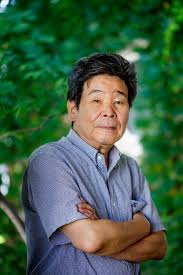
Isao Takahata Co-Founder
Isao Takahata (高畑 勲 Takahata Isao, born October 29 1935) is a Japanese film director, animator, screenwriter and producer who has earned critical international acclaim for his work as a director of anime films. Takahata is the co-founder of Studio Ghibli along with long-time collaborative partner Hayao Miyazaki.
Graduating from the University of Tokyo with a degree in French literature course in 1959, Takahata joined the newly-created Tōei Dōga animation company (Toei Animation) where a short time later he met Miyazaki, and also directed his first feature film Hols: Prince of the Sun. Ostracized within the company after the financial failure of the film (despite its artistic success), he and Miyazaki left in order to work together, and collaborated on many other films. Unlike most anime directors, Takahata doesn't draw and never worked as an animator before becoming a full fledged director.
According to Hayao Miyazaki, "Music and study are his hobbies".
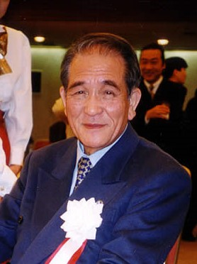
Co-Founder Yasuyoshi Tokuma
Tokuma Yasuyoshi (born October 25 1921, died September 20 2000) was a producer and the president of Tokuma Shoten and the Tokuma Group, as well as at a time president of the Daiei Motion Picture Company, Studio Ghibli and a supervisor at Tokyo Metropolitan Museum of Photography.
Tokuma became the president of Tokuma Shoten, the parent company of Studio Ghibli, in 1954. Before becoming president, he had worked as a reporter for the Yomiuri Shinbun and as the president of another printing house. Tokuma produced many films while president, including all of the Studio Ghibli films except Grave of the Fireflies.
Tokuma passed away at a Tokyo hospital on Wednesday, September 20, 2000. He was 78 years old.
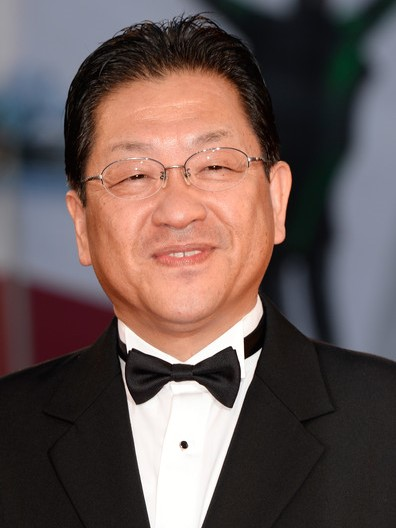
Koji Hoshino President
Koji Hoshino (born May 7 1956) was a Former President of Walt Disney Japan, and from February 1, 2008 - Executive Director and President of Studio Ghibli. He took the post from the hands of Tosio Suzuki , who decided to surrender the presidency to him because Hoshino helped sell Ghibli films since 1996, and also helped to release the film "Princess Mononoke" in the US.
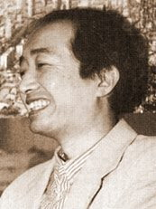
Animator Yoshifumi Kondō
Yoshifumi Kondō (近藤 喜文 Kondō Yoshifumi, March 31 1950 – January 21 1998) was a Japanese animator who worked for Studio Ghibli in his last years. Kondō directed the animated film Whisper of the Heart, and was expected to become one of the top directors at Studio Ghibli, alongside Hayao Miyazaki and Isao Takahata, and to become their eventual successor.
Kondō died of aortic dissection in 1998. His death is said to have been caused by excess work, and seems to be the main reason for Hayao Miyazaki's first announcement of retirement in 1998. Although Miyazaki later returned to Studio Ghibli, Kondō's death seems to have influenced Miyazaki to work at a more relaxed pace.
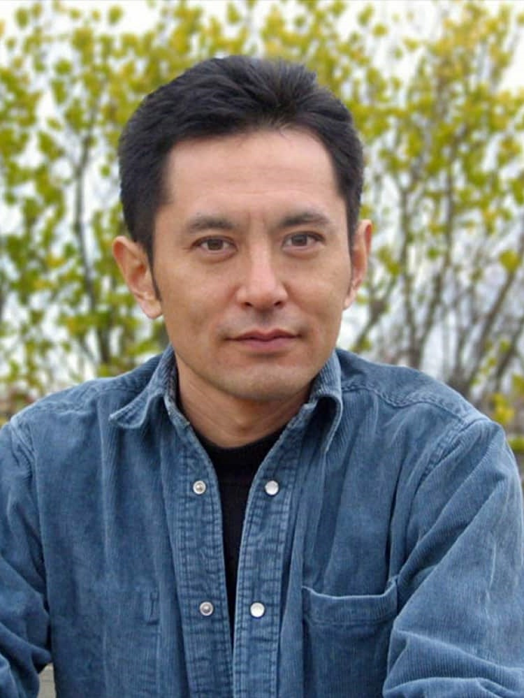
Gorō Miyazaki Animator
Gorō Miyazaki (宮崎 吾朗 Miyazaki Gorō, born January 21 1967) is a Japanese film director and landscaper. He is the son of Hayao Miyazaki. Described as "reluctant" to follow his father's career, Gorō initially worked as a landscaper for many years before entering the film business. He has directed two films, Tales from Earthsea (2006) and From Up on Poppy Hill (2011).
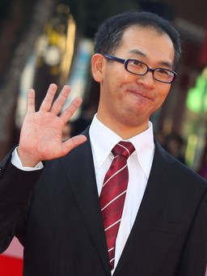
Animator Hiromasa Yonebayashi
Hiromasa Yonebayashi (米林 宏昌 Yonebayashi Hiromasa, born July 10 1973), nicknamed Maro, is a Japanese animator and director. After his directorial debut with Studio Ghibli (The Secret World of Arrietty), he became the youngest director of a theatrical film produced by the studio. He was nominated for the Academy Award for Best Animated Feature in 2015 for his second film, When Marnie Was There.
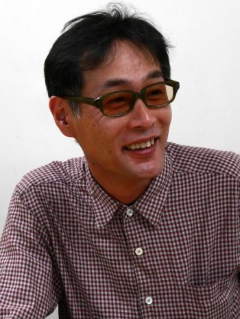
Katsuya Kondō Animator
Katsuya Kondō (近藤勝也 Kondō Katsuya, born June 2 1963) is one of the top animators at Studio Ghibli. in Aichi Prefecture, he has been working on Ghibli movies since doing key animation on Laputa: Castle in the Sky in 1986. He was Animation Director for Kiki's Delivery Service, Only Yesterday, and Ocean Waves. He also did the character designs for Kiki and Ocean Waves (along with providing illustrations for the original novel). He worked as a Key Animator on Princess Mononoke and My Neighbors the Yamadas.
He once again served as Animation Director for the Studio Ghibli Museum short House Hunting, as well as the Nisshin Seifun TV CM. He also served as Supervising Animator on Ponyo on the Cliff by the Sea, and wrote the lyrics for that film's theme song.
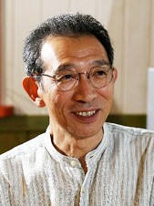
Art Director Kazuo Oga
Kazuo Oga (男鹿和雄 Oga Kazuo, born February 29 1952) joined Studio Ghibli in 1988 as the background art director for My Neighbor Totoro. His other credits as background art director include Kiki's Delivery Service, Only Yesterday, Pom Poko, and Princess Mononoke. He is called the master of the images of the Ghibli Studio. He paints special colors for posters - "Nicker Poster Color", something between watercolor, gouache, ink and acrylic.
He left Studio Ghibli in 1994 to pursue a free-lance career as a background artist and illustrator but continues to work on projects for the studio
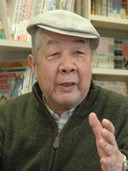
Yasuo Ōtsuka Animator
Yasuo Ōtsuka(大塚康生 Ootsuka Yasuo, born July 11 1931) has been a colleague and mentor to both Hayao Miyazaki and Isao Takahata since the 1960s. In his animation career he has drawn and sketched storyboards, handled continuity, layouts and eyecatches, written screenplays, and worked as a key animator, character designer, supervisor, and director.
Since retiring in 1981, Ōtsuka has been fostering young animators as an instructor and advisor at Telecom Animation Films. Since 2001 he has been headmaster of the studio's online animation school, Anime Juku.
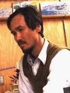
Background Artist Naohisa Inoue
Naohisa Inoue (井上 直久 Inoue Naohisa, born in 1948) is a fantasy artist influenced by both the Surrealism and Impressionism movements. Most of his paintings are set in the fantastical land of Iblard (イバラード Ibarādo). He created reference and background art for the Studio Ghibli film Whisper of the Heart and also provided a cameo appearance as the voice of Minami. More recently, his works were given a more direct adaptation in the short film The Day I Harvested a Star (星をかった日 Hoshi o Katta Hi) which will be shown exclusively at the Ghibli Museum. He directed the 2007 OVA Iblard Jikan, produced by Studio Ghibli.
Inoue is currently a professor at Seian University of Art and Design.
He attended the Kanazawa College of Art from 1971 to 1973.